집에서 한 단계씩 따라 하시면 됩니다. 단계를 마칠 때마다 “끝냈어요” 버튼을 누르시면 다음 단계로 자동으로 내려갑니다. 중간에 닫았다가 다시 열어도 어디까지 했는지 기억합니다(같은 기기, 같은 브라우저에서).
처음부터 끝까지 약 40분 정도 걸립니다. 자료를 만드는 동안 몇 분씩 기다리는 구간이 있으니, 그때는 화면을 닫지 말고 기다려 주세요.
이 도구는 예전에 “노트북LM”이라고 불렸고, 2026년 7월에 구글이 “Gemini Notebook(제미나이 노트북)”으로 이름을 바꿨습니다. 같은 도구이고 기능도 같습니다. 인터넷에서 “노트북LM”으로 된 설명을 보시면 이 도구를 말하는 것입니다.
크롬을 열고 Gemini Notebook 주소로 들어갑니다
예전 주소인 notebooklm.google.com으로 들어가도 같은 곳으로 연결됩니다.
제대로 들어왔다면 아래와 같은 화면이 나옵니다. 브라우저 탭에 Gemini Notebook이라고 보이고, 화면 왼쪽 위에도 같은 이름이 보입니다. 사진의 ① 빨간 네모가 주소를 입력하는 곳입니다.
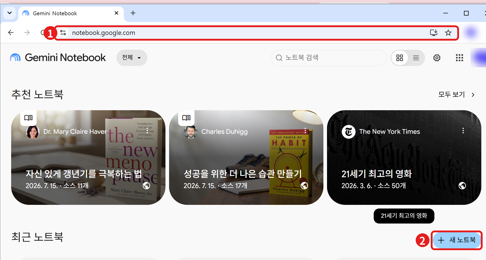
구글 계정으로 로그인합니다
새 노트북을 만듭니다
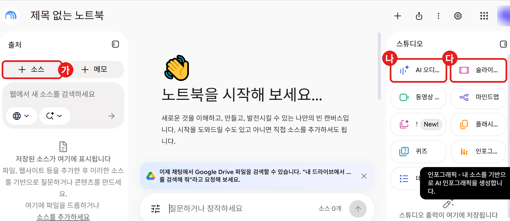
사진의 가, 나, 다는 앞으로 쓸 곳입니다. 가 왼쪽 “+ 소스”는 자료를 올리는 버튼, 나 오른쪽 “AI 오디…”는 팟캐스트를 만드는 버튼, 다 오른쪽 “슬라이…”는 슬라이드(PPT)를 만드는 버튼입니다.
설교 원고를 올립니다
화면 왼쪽 출처 칸 위쪽의 “+ 소스” 버튼(3단계 아래쪽 사진의 가)을 클릭합니다. 아래와 같은 큰 창이 열립니다.
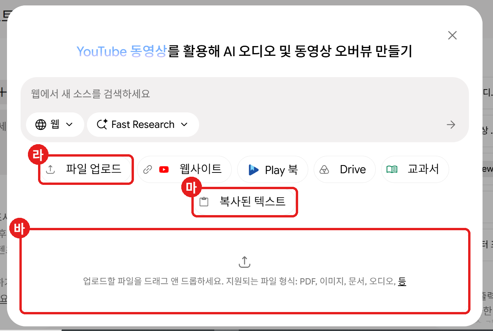
사진의 라, 마, 바 중 편한 방법 하나만 하시면 됩니다.
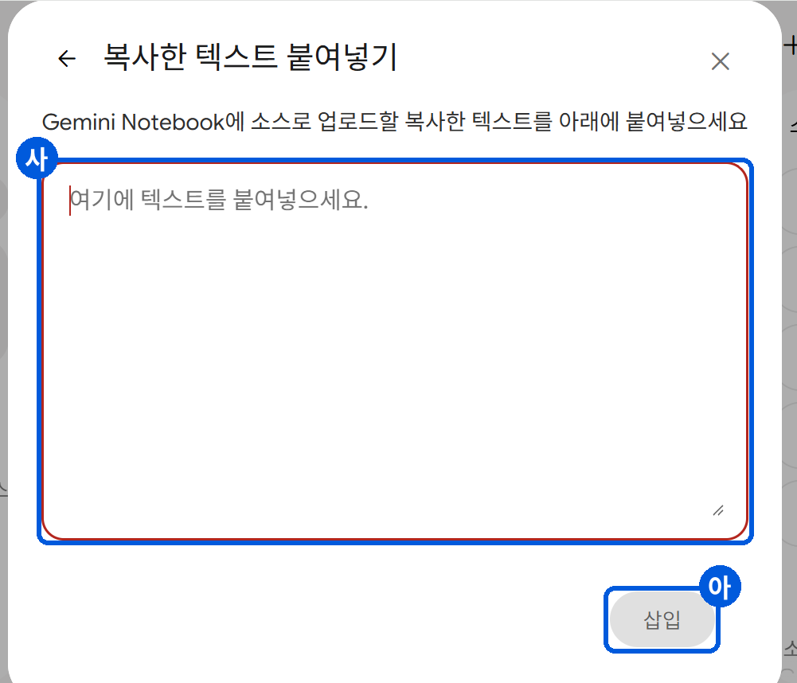
창이 닫혔다면 화면 왼쪽 출처 칸의 “+ 소스” 버튼을 다시 누르면 됩니다.
자료가 잘 올라갔는지 확인합니다
화면 배치 알아 두기: 왼쪽은 출처(올린 자료), 가운데는 채팅(AI에게 질문하는 곳), 오른쪽은 스튜디오(PPT와 팟캐스트를 만드는 곳)입니다. 화면이 좁으면 세 칸이 위쪽 탭으로 나뉘어 있으니 탭을 눌러 이동하세요.
스튜디오에서 슬라이드 버튼을 눌러 설정 창을 엽니다
언어, 길이를 확인하고 원하는 슬라이드를 설명하는 글을 적습니다
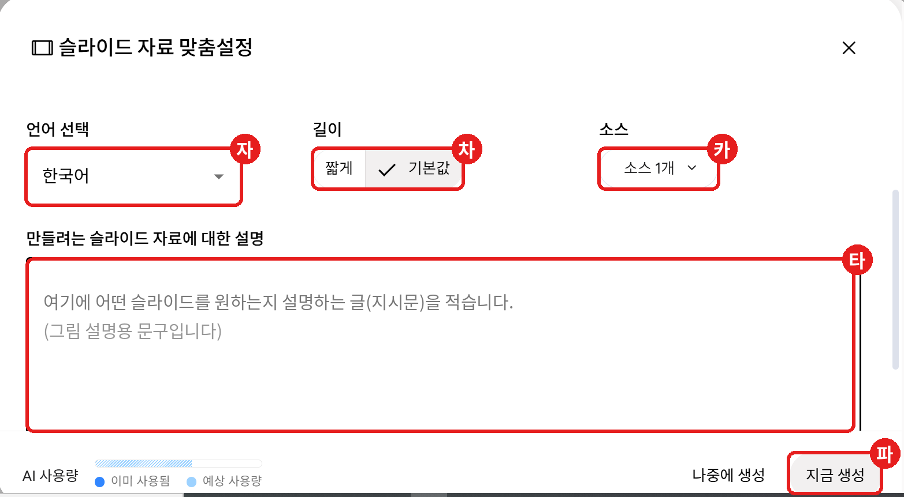
사진의 빨간 네모를 위에서부터 차례로 확인합니다. (설명 입력칸 안의 글은 그림 설명용으로 바꿔 넣은 문구입니다.)
창 맨 아래 왼쪽의 “AI 사용량” 막대는 구글이 정한 사용 한도에 얼마나 썼는지 보여 주는 표시로 보입니다. 하루에 만들 수 있는 양에 한도가 있을 수 있으니, 막대가 거의 찼다면 내일 다시 하셔야 할 수 있습니다.
“지금 생성” 버튼을 누르고 기다립니다
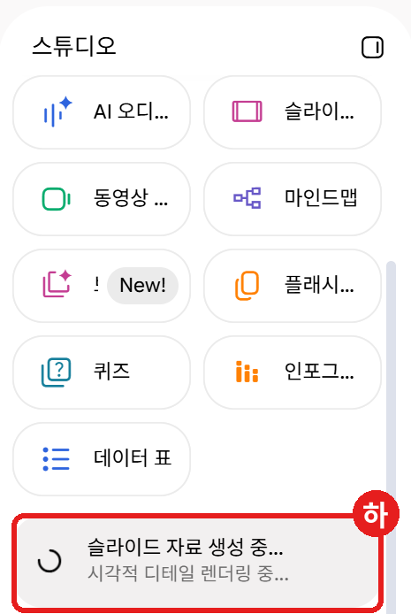
완성된 슬라이드를 열어서 한 장씩 넘겨 봅니다
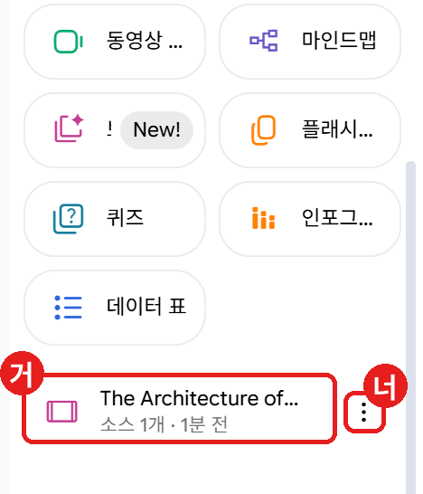
마음에 안 들면 지시문을 바꿔 다시 만듭니다
내 컴퓨터에 파일로 저장합니다
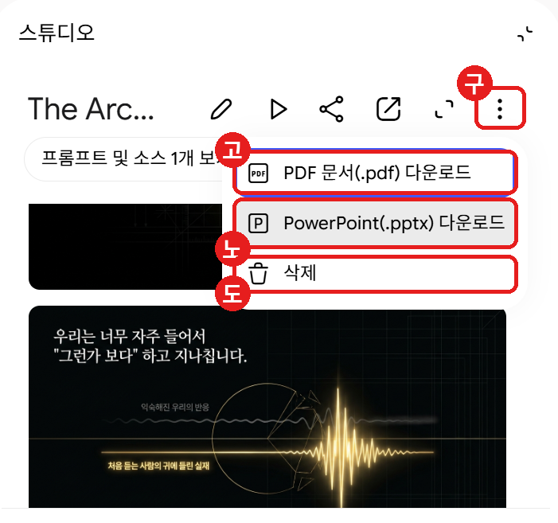
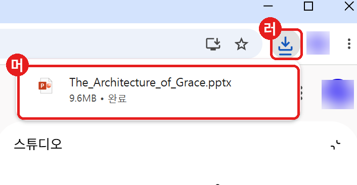
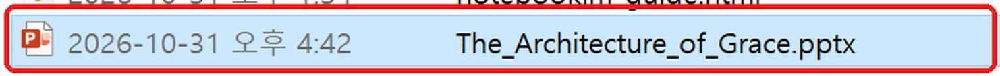
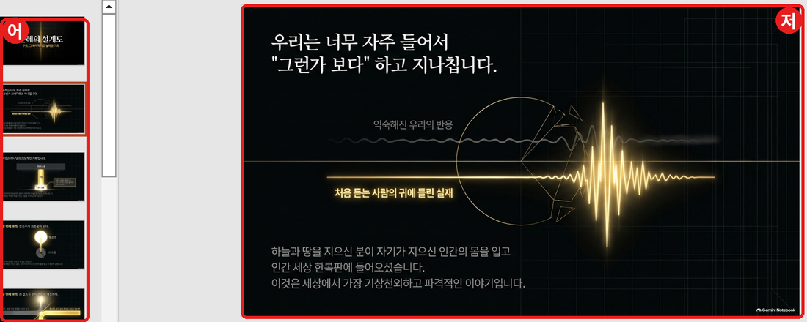
스튜디오에서 AI 오디오 버튼을 찾습니다
형식, 언어, 길이를 고르고 지시문을 적습니다
“생성”을 누르고 기다립니다
재생 버튼을 눌러 들어 봅니다
음성 파일로 저장합니다
(선택) 다른 형식도 한 번 만들어 봅니다
모든 단계를 마쳤습니다. 수고하셨습니다.